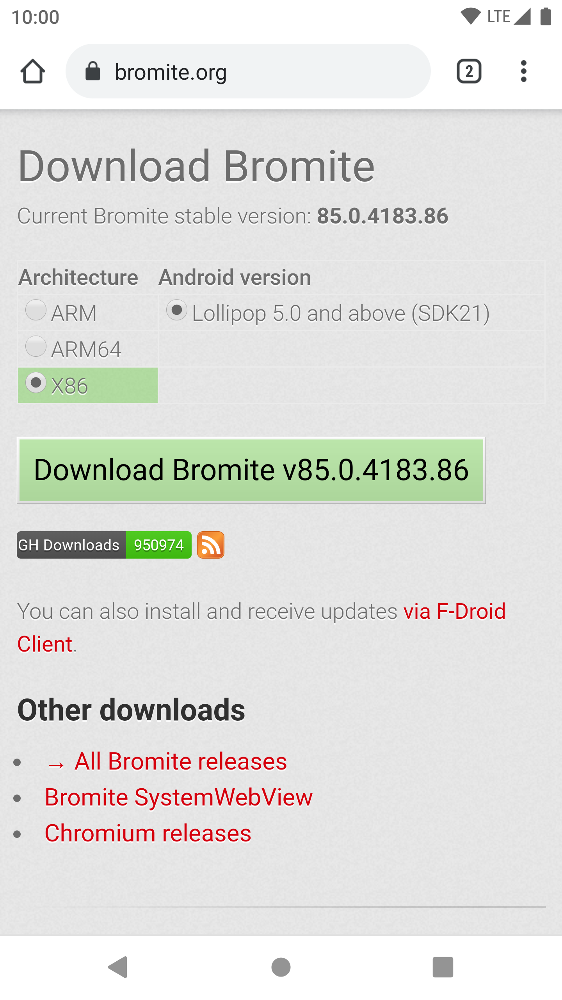
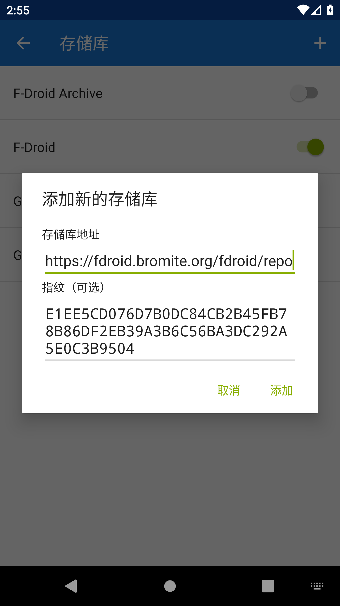
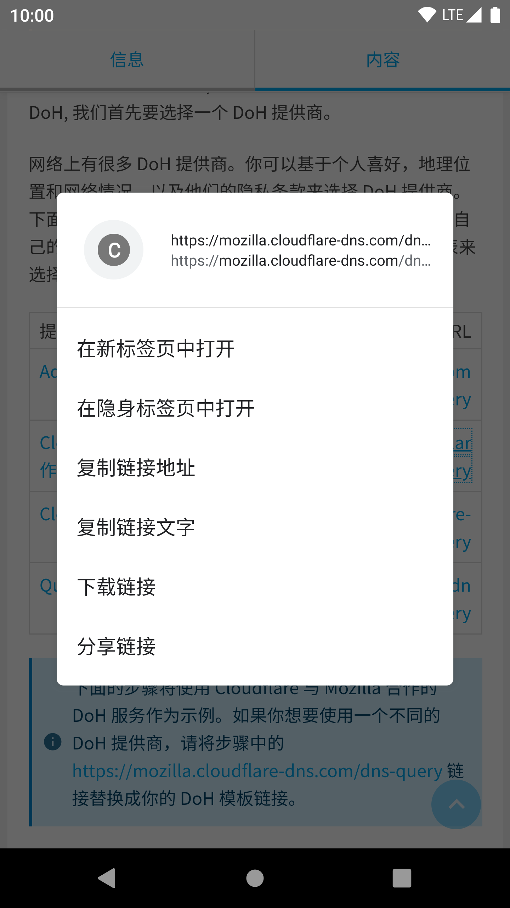
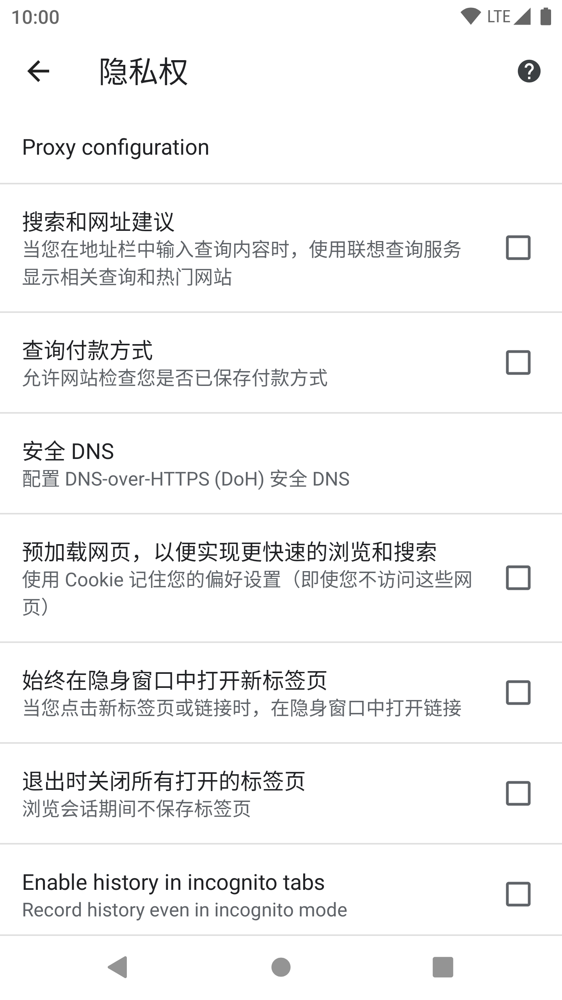
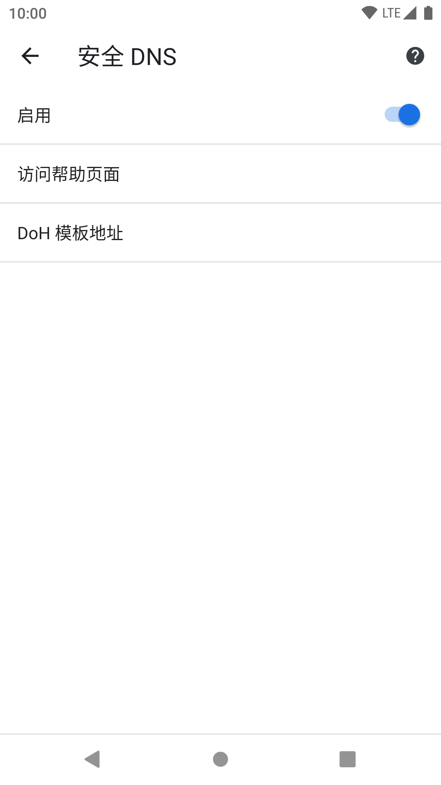
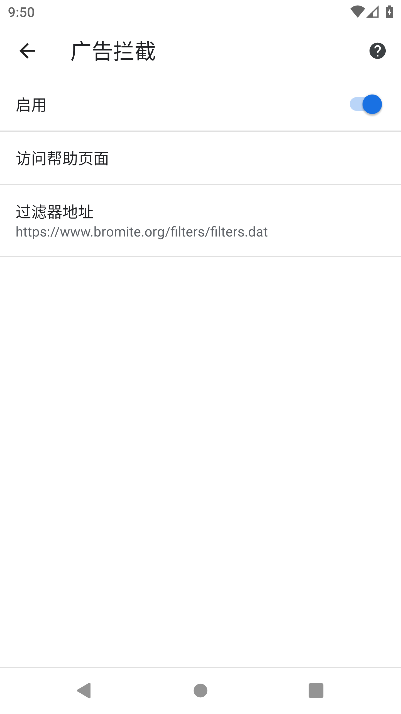
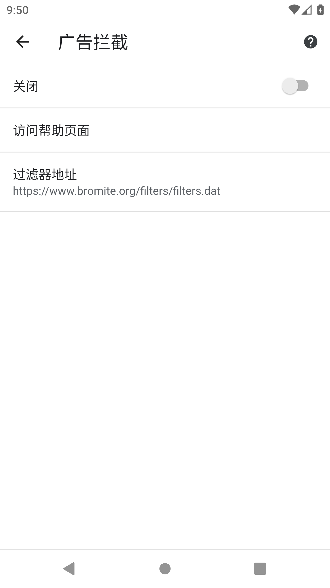

Bromite
Bromite - 你的瀏覽器應該由你掌控。
一個注重隱私，並且自帶廣告遮蔽器的 Chromium 修改版
開發者：csagan5 (Bromite Project)
官方網站 | 原始碼 (GitHub) | 開源協議 (GPL3)
簡介
當你看到上面的描述時，你可能會疑問：“Chromium 是什麼？我為什麼從來都沒有聽說有人用過 Chromium? ”
我們來換種方式描述 Chromium 吧，一句話來說：Chromium 是 Google Chrome（谷歌瀏覽器）的母專案。Google 在維護 Chromium 這個開源專案的同時，會將它的原始碼進行修改，並且貼上不同的商標發行。在功能和使用上，兩個瀏覽器幾乎相同。
假如你無法理解上面的概念也沒關係，只要把 Bromite ，我們這次要介紹的瀏覽器，看成 Google Chrome 的修改版就行了。
當我們最終安裝完成並且開啟這個瀏覽器的時候，假如你用過 Android 版 Chrome ，你會覺得 Bromite 的介面與操作和 Chrome 相差無幾。
為什麼用 Bromite ，而不用正統的 Chrome?
簡短的答案：你在使用 Chrome 的時候，也在使用 Google 的服務。
你可能依然不理解這個答案，那我們來舉個例子吧：當你使用 Chrome 訪問一個外語網頁時（比如，你的手機設定為中文語言，訪問英文的網站），介面下方會彈出一個提示：

注意到左下角的  圖示了嗎？這代表著當你點下翻譯（在這個特定的例子裡，點選“中文（簡體）”）的時候，Chrome 會連線 Google 翻譯伺服器並且讓 Google 翻譯來翻譯頁面的內容。
圖示了嗎？這代表著當你點下翻譯（在這個特定的例子裡，點選“中文（簡體）”）的時候，Chrome 會連線 Google 翻譯伺服器並且讓 Google 翻譯來翻譯頁面的內容。
從隱私角度來講，因為 Google 翻譯並不是一個開放的服務，所以我們並不知道網頁的內容在被送達到 Google 翻譯之後發生了什麼。Chrome 整合的 Google 服務還包括但不限於 書籤同步，“精簡模式” 以及 Google 新聞。這些服務都由 Google 提供，而其中涉及的所有資料都經 Google 處理。
因此，Bromite 在 Chromium （Chrome的母專案）基礎上，移除了上述來自 Google 的服務。
如果你想要一個 Chromium 核心的 Android 網頁瀏覽器，卻不想讓自己的資料被商業公司處理，那麼 Bromite 是你的絕佳選擇。
下載和安裝
通過官網安裝 Bromite
如果你的裝置上有 F-Droid 客戶端，建議檢視下方“通過 F-Droid 安裝 Bromite”的指導。
點選，或是在你常用瀏覽器的位址列中輸入 bromite.org :
如果你在正在微信內閱讀本文，請不要直接點選上方的連結；微信會對下載連結作出不可預測的行為。

你可能在開啟這個網頁後非常疑惑：為什麼我看不到下載按鈕？
因為不同 Android 裝置不同的硬體架構，不同的裝置適用不同的安裝包。要下載 Bromite, 滾動到這個頁面的最底部：
在上述的 "Download Bromite" 表格中，左側的 "Architecture" 列代表你將要下載的安裝包的處理器架構；一般情況下，你的裝置的對應架構會被綠色高亮。在這個例子裡，我使用的是一個執行在電腦上的 Android 模擬器，所以 "X86" 架構被高亮。右側的 "Android Version" 列代表安裝包對應的 Android 版本；目前 Bromite 只提供一個 Android 版本選項。
在當前使用的裝置上安裝
要為你正在使用的裝置下載和安裝 Bromite ，選中綠色高亮的 "Architecture"，然後點選 "Download Bromite ..."
你的瀏覽器可能會詢問是否保留該檔案，點選“確定”。下載完成後，點選“開啟”來安裝。
假如你之前沒有從目前使用的瀏覽器安裝過應用，你需要進行一個額外的步驟允許應用安裝。下面的視訊展示了 Bromite 的安裝以及允許未知來源應用的步驟。
為其它裝置安裝，或者你的處理器架構沒有被高亮
下面描述的是為其它裝置下載 Bromite 安裝包的方式。如果你不清楚你在做什麼，請省略這一步。
如果你的處理器架構並沒有被高亮，或者你要為其它裝置下載和安裝 Bromite, 你需要選擇這個裝置對應的處理器架構，然後點選 "Download Bromite ..."
“處理器架構”可以理解為裝置所使用的處理器的“內部語言”。不同的處理器“語言”之間並不互相相容。
如果你正在為其它裝置下載和安裝 Bromite, 下載完成後，你需要將安裝包傳輸到你的目標裝置上，並且在目標裝置上安裝。在為其它裝置下載 Bromite 的同時，你應該已經知道了在裝置間傳輸檔案的方式，在此不再贅述。
下方的表格列舉了一般情況下，裝置型別，釋出年份以及處理器架構的關係。
下表對處理器架構的推測並非 100% 準確，僅供參考。
| 裝置型別 / 釋出年份 | 處理器架構 |
|---|---|
| Android 手機、平板（2017年及以後釋出） | ARM64 |
| Android 手機、平板（2017年及以前釋出），或者你不清楚需要下載什麼，或者 ARM64 的安裝包安裝失敗了 | ARM |
| Android 模擬器，雙系統平板，Android-X86 電腦（Remix OS、鳳凰 OS、Prime OS、Bliss OS X86 ...） | X86 |
通過 F-Droid 安裝 Bromite
如果你已經跟著上一步通過官網安裝了 Bromite，可以省略這一步。但你也可以為了後續更新的方便在 F-Droid 上新增 Bromite 的儲存庫。
F-Droid 的官方倉庫並沒有提供 Bromite，但是 Bromite Project 提供了可以新增到 F-Droid 客戶端的倉庫，讓使用者能更方便地更新 Bromite.
在進行下面的步驟之前，請確保你已經在裝置上安裝了 F-Droid 客戶端。關於安裝 F-Droid 的指導，請點選這裡。
要將 Bromite 的倉庫新增到 F-Droid 客戶端，長按下方二維碼並點選“複製連結”，或者儲存並識別下面的二維碼：
請勿使用微信識別二維碼。微信會對識別的連結作出不可預測的行為。

複製連結之後， 開啟 F-Droid 客戶端，點選底欄的“設定” 進入設定介面。在設定介面，點選“儲存庫”：

進入“儲存庫”之後，點選右上角的 號：
因為 F-Droid 會自動識別已經複製的內容，彈出的“新增新的儲存庫”對話方塊內應該已經填寫了 Bromite F-Droid 儲存庫的資訊。
如果對話方塊內的文字是空的，你應該回到這部分的開頭，重新複製或者識別二維碼所包含的連結。
當你確認對話方塊內的資訊無誤，點選“新增” 來把 Bromite 的儲存庫新增到 F-Droid 裡。當你點選完“新增”，“儲存庫”列表最底端會出現一個“未驗證”的儲存庫。稍等片刻，F-Droid 客戶端會自動驗證該儲存庫，並且最終的儲存庫名為 "Bromite official F-Droid repository".
回到“設定”介面，點選底欄的“最新”，你就可以看到右下角的 按鈕了。在“搜尋”介面裡搜尋 "Bromite", 然後在下方點選 "Bromite" 行來檢視 Bromite 的詳細資訊。在此你可以點選“安裝”來安裝 Bromite. 關於在 F-Droid 裡搜尋和安裝應用的詳細指導，請點選這裡。

使用 Bromite
如果你之前在 Android 上使用過 Chrome, 那麼當你開啟 Bromite 的時候會感覺無比親切：它看起來和 Chrome 幾乎一模一樣！
正因如此，這裡不會贅述 Bromite (Chrome) 的基本使用，而是著重描述一些 Bromite 和 Chrome 的區別，以及一些隱私相關的注意事項。
因為 Bromite 的更新，本文可能不會隨時保持最新。如果你有任何的疑惑，請參考 Bromite Wiki.
DNS over HTTPS
中國聯通、Comcast 等網路運營商被證實進行過多種中間人攻擊；使用運營商提供的 DNS 存在被 DNS 汙染的風險。根據政府要求，中國所有網路運營商提供的 DNS 都被汙染以配合防火長城的運作。未來不排除網路運營商通過中間人攻擊進行 DNS 劫持（即便使用了未被汙染的 DNS 伺服器，查詢結果也因為中間人攻擊而被汙染）的可能。
DNS over HTTPS 是一個將 DNS 請求進行加密的方案。其意義在於 將 DNS 請求使用 HTTPS 協議加密，來防止可能的中間人攻擊 汙染 DNS 查詢結果。通過在瀏覽器內使用 DNS over HTTPS, 你可以指定一個 DNS 伺服器列表並且與它們進行加密的 DNS 查詢。
下述 DoH 為 DNS over HTTPS 的簡稱。
Bromite 可以使用 DoH, 但這個功能預設關閉。要啟用 DoH, 我們首先要選擇一個 DoH 提供商。
網路上有很多 DoH 提供商。你可以基於個人喜好，地理位置和網路情況，以及他們的隱私條款來選擇 DoH 提供商。下面是一個 DoH 提供商的簡表，你可以根據下表來選擇自己的 DoH 模板地址，也可以參照 privacytools.io 的列表來選擇。
下面的步驟將使用 Cloudflare 與 Mozilla 合作的 DoH 服務作為示例。如果你想要使用一個不同的 DoH 提供商，請將步驟中的 https://mozilla.cloudflare-dns.com/dns-query 連結替換成你的 DoH 模板連結。
在上表長按然後複製你想要的 DoH 模板連結， 在這個例子中，https://mozilla.cloudflare-dns.com/dns-query. 在長按彈出的對話方塊中，點選“複製連結地址”。
複製之後，點選 Bromite 右上角的 ，然後點選“設定”：
如果你看不到位址列和 ，請向上滾動（手指向下移動）一下頁面。

在“設定”介面，向下滑動直到你能看到“隱私權”，點選“隱私權”。在“隱私權”介面，點選“安全 DNS”：

在“安全 DNS”介面，點選“關閉”右側的開關來開啟安全 DNS。現在你應該能看到一個“啟用”以及一個開啟的開關。
步驟到此還沒結束，我們還需要點選 "DoH 模板地址" 並且 輸入剛才複製的地址 ：

輸入完成後點選“儲存”。在此 DoH 配置完成，你可以點幾次返回來回到瀏覽狀態。
新增和設定搜尋引擎
儘管 Bromite 是一個“反 Google”的專案，它的預設搜尋引擎依然是 Google. 無可否認，Google 在某些標準上是目前“最好用”的搜尋引擎。但從隱私角度出發，它也有著一些致命的缺陷。其中的例子有：你的搜尋請求被用於精準推廣用途；多次被內容農場汙染搜尋結果...
你可能想把 Google 替換成例如 DuckDuckGo 等更尊重隱私的搜尋引擎。
DuckDuckGo 的隱私條款請見https://duckduckgo.com/privacy。
位於 -> 設定 -> 搜尋引擎，根據你設定的系統語言和地區，Bromite 預置了原版 Chrome 預置的所有搜尋引擎：
如果你是一箇中文的 DuckDuckGo 使用者，你可能會疑惑：為什麼我找不到 DuckDuckGo 作為我的搜尋引擎？
DuckDuckGo 確實沒有被內建到中文的 Chrome 當中。有一個解決方法：訪問一下 DuckDuckGo , 然後再次訪問“搜尋引擎”選單，你就能在“最近用過的搜尋引擎”下找到 DuckDuckGo 了。在“搜尋引擎”選單選中 DuckDuckGo, 現在 DuckDuckGo 就是你的預設搜尋引擎了。

然而，在 noarch 的測試當中，這個方法並不 100% 有效... 下面的視訊展示了另一個有效的方法。如果讓 Bromite 自動新增 DuckDuckGo 的方法失敗了，你可以嘗試下面的方法。
下面的視訊使用類原生 Android 作為示例。不同手機廠商系統的操作可能會有差別。
廣告攔截
Bromite 自帶廣告攔截功能，並且廣告攔截功能預設開啟。
如果廣告攔截破壞了某些網頁的正常使用，你可以在訪問它們之前關閉廣告攔截，然後在訪問結束後開啟：
在 -> 設定 -> 廣告攔截設定，你可以開關廣告攔截以及自定義廣告攔截規則列表。點選“啟用”右側的開關將其“關閉”，就可以關閉廣告攔截。
 關於自定義廣告攔截的指導，請見https://www.bromite.org/custom-filters .
不在退出後保留標籤頁
在 Bromite 和 Chrome 的預設設定中，開啟 Bromite 的時候會自動恢復上一次瀏覽時的標籤頁（網頁）。你可能不想讓它恢復上一次的標籤頁，那麼你可以進入 -> 設定 -> 隱私權，並且選中“退出時關閉所有開啟的標籤頁”。

彩蛋：如果你在 Bromite 或 Chrome 打開了超過 99 個標籤頁，它依然會保持微笑！